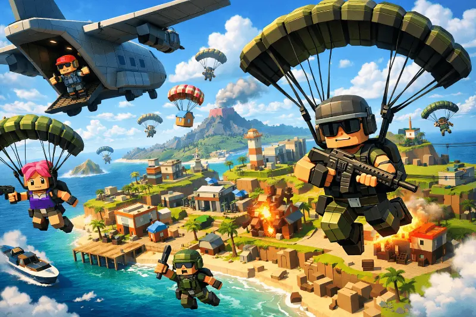

Los 5 mejores juegos estilo Free Fire dentro de Roblox en 2026

Una de las fortalezas más subestimadas de Roblox es su capacidad para replicar mecánicas de los juegos más populares del mercado. Desarrolladores independientes han construido dentro de la plataforma experiencias de Battle Royale y shooter que capturan la esencia de Free Fire, adaptándola a un entorno sin requisitos de hardware exigentes ni sistemas de pay-to-win. Esta guía analiza los cinco mejores con todo el detalle que necesitas para elegir por dónde empezar.
Por qué Roblox es el laboratorio perfecto para recrear Free Fire
Para los jugadores de Free Fire, explorar los shooters y Battle Royale de Roblox tiene ventajas concretas: funcionan en dispositivos de gama baja que no corren Free Fire fluidamente, no tienen microtransacciones que afecten el combate, y la variedad de títulos permite cambiar de experiencia sin salir de la plataforma. Son complementos perfectos al ecosistema de Free Fire, no sustitutos.
Los 5 mejores juegos: análisis completo
Strucid — El Battle Royale más cercano a Free Fire
Strucid es el título de Battle Royale más cercano a Free Fire dentro de Roblox. Hasta 100 jugadores caen en un mapa que se cierra progresivamente, recogen armas del suelo y el último equipo en pie gana. La zona segura se contrae con la misma lógica que en Free Fire, creando la tensión característica del género. Incorpora además mecánicas de construcción de cobertura que añaden una capa táctica inexistente en Free Fire. Con más de 410.000 jugadores activos en 2026, su comunidad hispanohablante es activa y sus servidores latinoamericanos ofrecen latencias aceptables.
Arsenal — El entrenamiento de reflejos definitivo
Arsenal es técnicamente un shooter por rondas, no un Battle Royale, pero comparte con Free Fire la mecánica más fundamental del competitivo: el duelo en tiempo real donde la habilidad individual determina el resultado. Con más de 980.000 jugadores activos, es el shooter más concurrido de Roblox. Su sistema Gun Game —avanzar a través de una secuencia de armas logrando eliminaciones— es similar al modo que Free Fire incorporó en sus actualizaciones recientes. Los jugadores de Free Fire que quieren mejorar su puntería encontrarán en Arsenal el campo de entrenamiento más efectivo disponible en la plataforma.
Frontlines — El shooter táctico más serio de Roblox
Frontlines propone equipos de 5 contra 5 con objetivos como bombas y rescates, y un sistema de economía de rondas similar a Valorant. No es un Battle Royale, pero sus habilidades de peek y movimiento lateral son directamente transferibles al Clash Squad de Free Fire. Los jugadores que dominan Frontlines transfieren esas habilidades tácticas al modo competitivo de Free Fire de forma natural. Con más de 620.000 jugadores activos, tiene la comunidad competitiva más organizada de los shooters de Roblox en 2026.
Island Royale — El Battle Royale sin distracciones
Island Royale es el Battle Royale más veterano y puro de Roblox. Sin mecánicas de construcción y con un estilo de combate directo, replica fielmente la filosofía de Free Fire dentro de la plataforma: isla, zona que se cierra, recogida de armas del suelo y el último en pie gana. Para jugadores nuevos en el género Battle Royale que quieren aprender los fundamentos antes de enfrentarse a los servidores competitivos de Free Fire, Island Royale es la mejor escuela disponible. La gestión del inventario, la decisión de cuándo pelear y el aprendizaje del ritmo del círculo son habilidades idénticas en ambos juegos.
BedWars — Decisiones rápidas bajo presión
BedWars combina gestión de recursos y combate de alta presión: construye defensas, acumula recursos y ataca las bases enemigas mientras proteges la tuya. La transferencia de habilidades con Free Fire es indirecta pero real: BedWars desarrolla la capacidad de tomar decisiones rápidas bajo presión, gestionar múltiples amenazas simultáneas y coordinar con un equipo pequeño. Con más de 1,2 millones de jugadores activos, es el juego con la comunidad hispanohablante más grande de toda la plataforma Roblox y un excelente entrenamiento para el Clash Squad de Free Fire.
¿Cuál elegir según tu estilo de juego?
Ventajas generales de los shooters de Roblox frente a Free Fire
- Requisitos de hardware mínimos: todos corren en teléfonos o PCs de cuatro o más años de antigüedad sin problemas.
- Cero inversión necesaria: ninguno de los cinco requiere diamantes ni pases para competir al máximo nivel.
- Variedad sin cambiar de plataforma: puedes pasar de un shooter táctico a un Battle Royale sin salir de Roblox.
- Sin anuncios de video forzados: Roblox no interrumpe la sesión con publicidad obligatoria.
- Actualizaciones frecuentes: los desarrolladores de estos títulos actualizan regularmente para mantener el meta fresco.